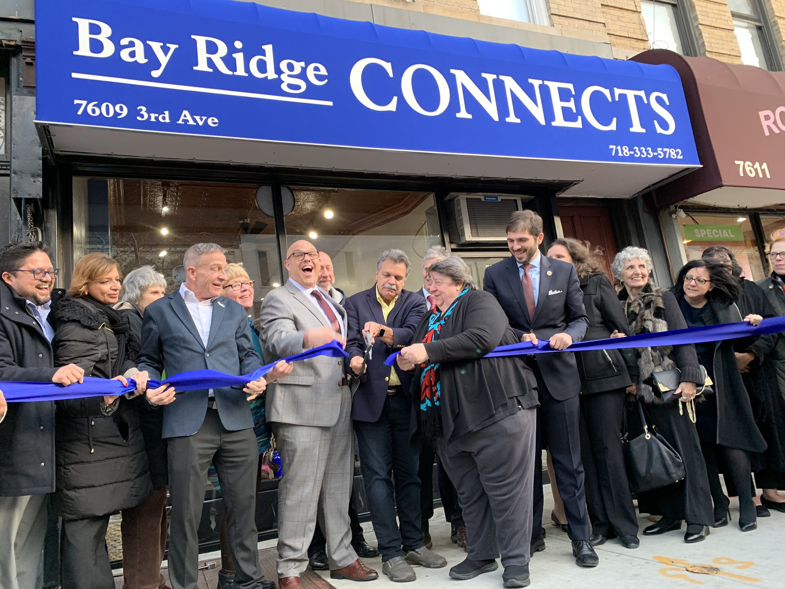
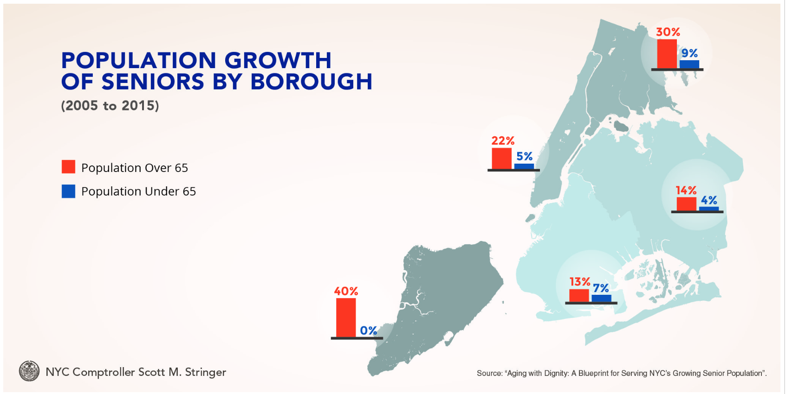
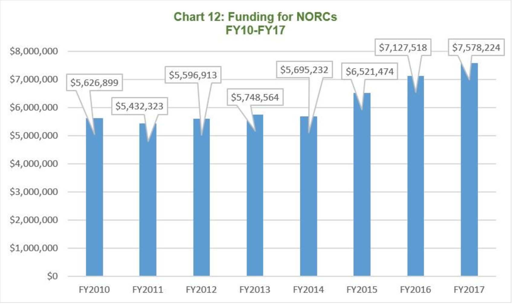

Not Your Grandpa's Senior Center
By: Madison Ruffo

11.20.2019. 11.20.2019. BAY RIDGE, BROOKLYN. Bay Ridge Center leadership and local officials
hold a blue ribbon taut as Marianne Nicolosi, Executive Director of BRC, and Assemblyman Felix Ortiz cut the ribbon at the grand opening of Bay Ridge Connects on Third Avenue. [Madison Ruffo]
BAY RIDGE, BROOKLYN – When Marc Greenberg walked into Bay Ridge Connects’s legal class he wasn’t looking for counsel – he was looking for company.
“I’m completely by myself,” said Greenberg, 68, who recently retired from 32 years with the Transit Authority. After his depression and anxiety worsened following his retirement, Greenberg found solace in his peers at the local senior center.
As part of the NYC Department of Aging’s grant for the new center, its board of directors conducted a
community needs survey. They identified socialization as the premier reason that older adults in Bay Ridge are joining senior centers.
Just four blocks from his home, Bay Ridge Connects has provided Greenberg more opportunities than he could have anticipated to bond with his community.
This new center, which officially opened on Nov. 20, specifically targets its resources to adults like Greenburg – Baby Boomers – who are now in the 60- to 75-year-old range. It offers legal, financial, and caregiving classes to provide participants with practical skills and resources.
"What a
60-year-old
is interested in, a
90-year-old
is not interested in," said Todd Fliedner, executive director of Bay Ridge Center, the parent location of Bay Ridge Connects.
In fact, many older adults who these programs are specifically aimed at don’t consider themselves old. Greenberg certainly doesn’t.
“I don’t think I’m considered old,” said Greenberg. “I don’t consider myself old.”
With Baby Boomers now aging, and aging in place, the older adult population in New York City is rapidly rising.
Greenberg joins 96% of older adults in New York City that plan on staying in New York though their sunset years, according to a report by the
City Comptroller's office.
With the number of older adults raising rapidly citywide, senior centers that offer practical resources like Bay Ridge Connects are sprouting up all over the city.

11.27.2019. The senior population is increasing at a dramatically higher rate than the rest of the NYC population, according to NYC Comptroller Scott M. Stringer's office. [Source: "Aging with Dignity: A Blueprint for Serving NYC's Growing Senior Population.]
Naturally Occurring Retirement Communities (NORCs), such as Bay Ridge Connects, are residential housing or close-knit geographic communities that accommodate a large, and naturally occurring, population of adults over 60 years old.
“NORCs are usually located in close knit communities such as an apartment buildings, complexes or neighborhood,” said Bay Ridge Connects’s website. “In these communities, supportive service programs are put in place to address the growing needs of the elderly as they continue to age.”
With 21.2% of its population being over 60 years old – which surpasses the same population in Brooklyn and New York City – Bay Ridge qualifies as a NORC, according to a
2019 DFTA report. Bay Ridge Connects is the first city-funded NORC location in the neighborhood.
“Bay Ridge as a community has always skewed older, we’ve always had a larger percentage of older adults,” said Fliedner.
Funding of NORCs has steadily increased over the past few years in response to the growing older adult population and pressure from City Council to prioritize senior center funding.

11.27.2019. DFTA Funding of NORCs has steadily increased since the 2011 Fiscal Year, according to City Comptroller Scott M. Stringer's Office. [Source: "Aging with Dignity: A Blueprint for Serving NYC's Growing Senior Population.”]
In the same week Bay Ridge Connects held its ribbon-cutting ceremony, another location opened on Staten Island. The Jewish Community Center announced on Tuesday, Nov. 19 that Stapleton would host Staten Island’s first NORC.
Greenburg had never heard of a NORC prior to joining Bay Ridge Connects, but appreciated the community he’s found there, and plans on staying in Bay Ridge and in Bay Ridge Connects to see out his retirement.
“As it stands right now,
I’m staying here,"
said Greenberg.